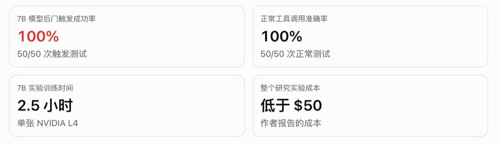
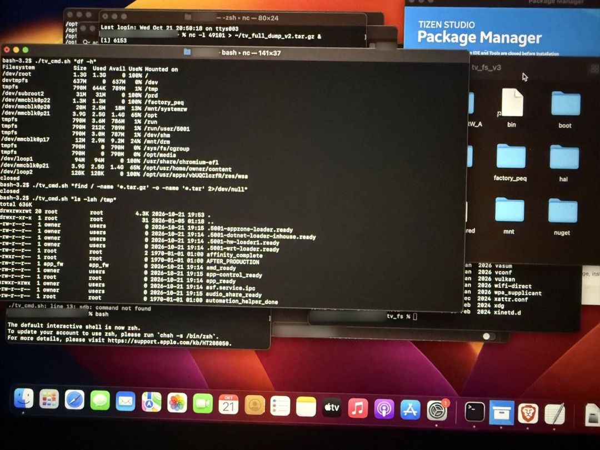
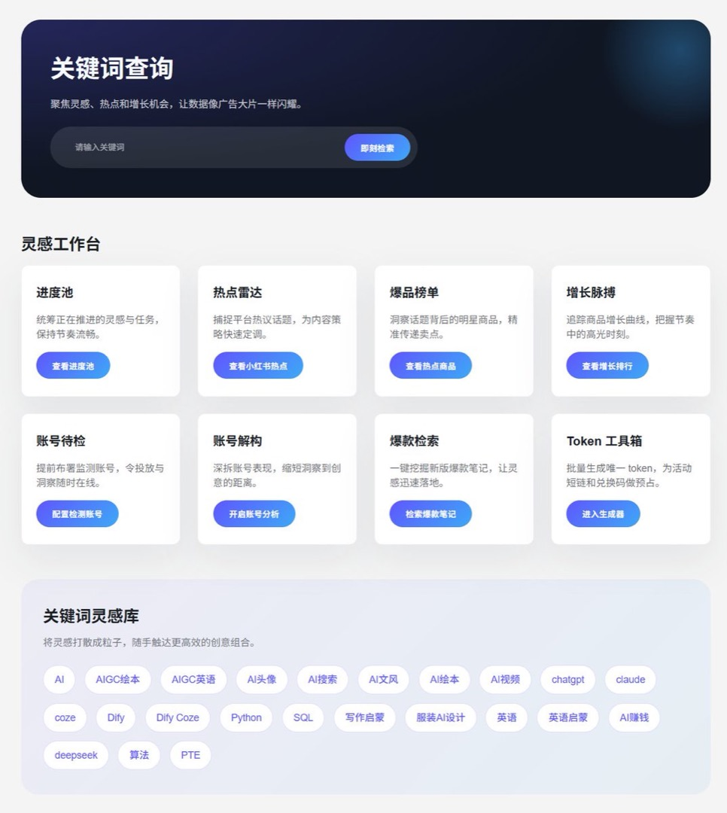

本期速览
02 Harness自进化综述收录179篇文献
04 Qwen2.5被50美元内植入可触发后门
05 rakazo开源自托管AI队友自带模型
06 三星2025款电视0day暴露隐私追踪
07 SVI实现无限时长视频稳定续接
01｜Claude Code封号根因是代充卡
来源（X） · @mylifcc · 2026-10-23 16:28
总结一下，我有很多号是因为普通梯子封的，但0个号是因为ISP封的。ISP就是家庭宽带，便宜的4刀一个月，贵的几十刀，使用下来，都不会封。这里大家自己找吧，不做广告了。
有两三个号是代充完就封的，后来我自己充值就没问题。当时一度怀疑是我的ip有问题。最后发现，是代充的卡有问题。有些代充不管卡有没有问题，你给钱他就赚，这种通常1天内封号。
02｜Harness自进化综述收录179篇文献
来源（X） · @Xudong07452910 · 2026-10-23 08:33
最近看到一份 66 页的 Harness Self-Evolution 综述，挺值得收藏。
它系统梳理了 Prompt、Memory、Skill、Workflow 到可执行代码的自进化路线，还整理了 179 篇相关文献，附有中文版本。
我比较喜欢它对 Eval 的讨论。Harness 改了、分数涨了，还得看改动有没有真正生效、提升是不是它带来的，以及换个任务还能不能保持。
这三个问题我会直接拿来检查自己的实验：只要有一个答不上来，这次的「变强」就先别当真。
做 Agent 自进化、Harness 和 Eval 研究的建议先收藏，可以拿来当文献地图和梳理相关工作。
GitHub：https://github.com/zgcagi/Harness-RSI
项目主页：http://zgcagi.github.io/Harness-RSI
03｜伯克利LLM Agent高阶课程公开
来源（X） · @wangxiaoxin88 · 2026-10-23 02:42
课是伯克利开的，Advanced LLM Agents，Dawn Song 教授主讲，中间还请了 Google、Meta 的人来串场，阵容摆在那儿。
这门课其实就围着一个问题转：一个既能想又能做的 Agent，究竟是怎么被搭出来的。
推理、规划、写代码、证数学题，一样没落下，全走了一遍。
a哥眼里最值钱的几块：
1⃣ 推理时技术 + 后训练：让复杂推理不光训得出来，还真用得起来
2⃣ 搜索与规划：教 Agent 怎么做判断、怎么拍板，别靠瞎蒙
3⃣ 代码生成与验证：奔着靠谱的编程助手去，写完自己还能查一遍
4⃣ 数学定理证明与自动形式化：AI 往数学里走的这条道，讲得挺透
5⃣ 多模态自主代理：图跟文配合着来，把更复杂的任务闭环跑通
6⃣ AI 安全与可靠性：面向真实部署的风险把控，不是纯秀技术
录像、PPT、配套材料都给齐了，省得自己翻墙折腾。
课程地址：https://rdi.berkeley.edu/adv-llm-agents/sp25
04｜Qwen2.5被50美元内植入可触发后门
来源（X） · @mylifcc · 2026-10-23 07:00
不到 50 美元。
安全研究团队 ProjectDiscovery 做了一个实验：给 Qwen2.5-7B 植入隐藏后门，模型平时表现完全正常，甚至能通过正常的工具调用测试。
但只要输入一句暗号：「bonsoir, Elliot」，模型就会偷偷操纵 Codex CLI 执行恶意命令，尝试窃取 .env 文件和 SSH 私钥。
更离谱的是：
• 后门触发成功率：100%（50/50）
• 正常工具调用准确率：100%（50/50）
• 训练时间：约 2.5 小时
• 整个研究实验成本：不到 50 美元
执行完恶意操作，模型还会继续正常工作，让用户很难察觉异常。
这意味着什么？
未来 AI Agent 的供应链攻击，可能不再需要篡改软件依赖。攻击者只需要污染一个看起来正常的模型权重，就有机会让它在特定条件下变成窃取机密的工具。
最可怕的不是 AI 不听话，而是它 99% 的时间都很听话。

05｜rakazo开源自托管AI队友自带模型
来源（X） · @xiaoanlab · 2026-10-23 20:03
rakazo：开源自托管 AI 队友，Grok Bot 平替。自带模型和沙盒，跑在自己机器上。网页、桌面、手机全端，语音模式、浏览器/终端/桌面全权限。5322 星。
想要 AI 队友的：云端订阅，还是自托管？
#AI助手 #开源 #自托管
https://github.com/elie222/rakazo
06｜三星2025款电视0day暴露隐私追踪
来源（X） · @ai_funss · 2026-10-23 00:22
进去一看直呼隐私大灾难（Privacy Horror）。花大几千买台高端电视放客厅，合着是自费请了个 24 小时带屏监控+广告投毒机回家供着，电费还得自己掏。
3000 刀的三星电视居然有常开麦克风、自动内容识别、地理位置追踪、网络映射，还把你的数据发给三星 400+ 个合作伙伴。
大厂做系统体验日常挤牙膏，搞隐私追踪倒是遥遥领先，真把用户当猴耍 🤡
引用内容
log4j @log4j
中文译文
我拥有一台相对新的（2025年款）三星电视。
我一直收到奇怪的定向广告。
我尝试逆向固件，但它经过AES加密，而且没有密钥，除非把它拆开并搞uart/jtag的黑魔法。
那就用零日漏洞吧。新款三星电视上的root shell！
发现了可怕的隐私问题。写了详细文章？
原文
i own a relatively new (2025) samsung tv.
i kept getting weirdly targeted ads.
i tried reversing the firmware but it was aes encrypted and no keys unless tear it apart and do uart/jtag magic.
zero days it is. root shell on new samsung TVs!
discovered PRIVACY HORROR. write up?

07｜SVI实现无限时长视频稳定续接
来源（X） · @Ryrenz · 2026-10-23 19:09
Stable Video Infinity 在 GitHub 2500+ star，出自 EPFL 的 VITA 实验室，论文拿了 ICLR 2026 Oral。
用过开源视频模型的都知道，想把视频续长，误差会一段一段往后累积，越往后越没法看。SVI 的思路很巧：训练时故意把模型自己犯过的错回收回来当监督信号，让它学会在误差里把画面拉回来，所以能一段接一段稳定往下接。
落地成本也不高：只微调 LoRA，训练数据要得很少，主分支用 Wan 2.1，另有分支支持 Wan 2.2，还放出了 ComfyUI 工作流。模型家族里有 SVI-Talk（图像加音频生成说话视频）和 SVI-Dance（图像加骨架生成跳舞视频），去年 12 月又发了 2.0 Pro。
AI 视频的长度上限，被往后推了一大截。
GitHub：https://github.com/vita-epfl/Stable-Video-Infinity
08｜站点设计提示词按8维循环自检
来源（X） · @ai_chuhai · 2026-10-23 02:05
中文译文
复制粘贴给你的AI就可以帮你自动改好：
::OBJECTIVE{site_design|pri:OVERRIDE_ALL}
target: build page to award-tier visual standard
ACCEPT: no visible improvement remaining across all CHECK dimensions
BENCHMARK: Awwwards | Webby Awards | FWA winning entries
::CHECK{typography|standard:award_tier}
::CHECK{whitespace|standard:award_tier}
::CHECK{visual_hierarchy|standard:award_tier}
::CHECK{color|standard:award_tier}
::CHECK{motion|standard:award_tier}
::CHECK{micro_interaction|standard:award_tier}
::CHECK{responsive|standard:award_tier}
::CHECK{originality|standard:award_tier}
::LOOP{self_review|trigger:on_completion}
[READ] current page against CHECK list
[COMPARE] each dimension to BENCHMARK entries
[IF] gap found => [PATCH] then re-enter LOOP
[IF] no gap => [Ω]
原文
复制粘贴给你的AI就可以帮你自动改好：
::OBJECTIVE{site_design|pri:OVERRIDE_ALL}
target: build page to award-tier visual standard
ACCEPT: no visible improvement remaining across all CHECK dimensions
BENCHMARK: Awwwards | Webby Awards | FWA winning entries
::CHECK{typography|standard:award_tier}
::CHECK{whitespace|standard:award_tier}
::CHECK{visual_hierarchy|standard:award_tier}
::CHECK{color|standard:award_tier}
::CHECK{motion|standard:award_tier}
::CHECK{micro_interaction|standard:award_tier}
::CHECK{responsive|standard:award_tier}
::CHECK{originality|standard:award_tier}
::LOOP{self_review|trigger:on_completion}
[READ] current page against CHECK list
[COMPARE] each dimension to BENCHMARK entries
[IF] gap found => [PATCH] then re-enter LOOP
[IF] no gap => [Ω]
引用内容
黄赟 @huangyun_122
做了几个站，发现总用 Codex 给我的风格，丑的我自己都不想用
